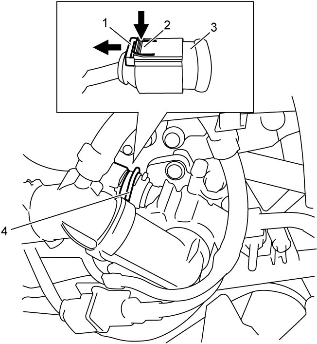

1C
| ECT Sensor Removal and Installation |
Removal
1)Remove battery from vehicle. 
2)Drain cooling system.
3)Disconnect connector from ECT sensor as follows.
a)Move connector lock pin (1) in arrow direction as shown in figure.
b)Push connector lock lever (2) and disconnect connector from ECT sensor (3).
4)Remove clip (4) and then remove ECT sensor and O-ring.


 "Expand image")
Installation
Reverse removal procedure noting the following points.
•Refill cooling system with coolant.
•Check cooling system for leakage.
•Check cooling system for leakage.